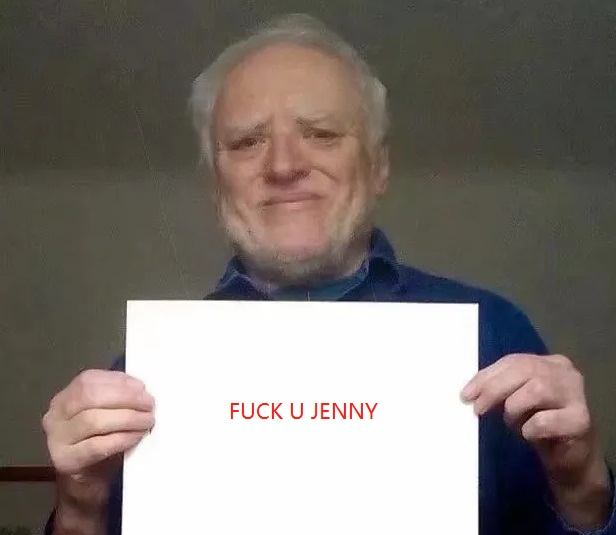

About FUJ
Yesterday, I was all pumped to hit the bars with my buddies and have a few drinks. But let me tell ya, Jenny went ballistic on me, giving me an earful like you wouldn't believe! She's all like, "You never make any damn money, and all you do is hang out with your buddies!" I've had it, man. I'm sick and tired of being under her thumb. So, I heard you guys in the blockchain biz are raking in the dough, and I thought, why the heck not? I'm gonna create my own meme coin using ChatGPT! Every single transaction's gonna have a 1% tax, and guess where that dough's going? Straight to Jenny's wallet! Yeah, that's right. Gotta prove to her that I'm hustling hard every day. She ain't got a clue about blockchain, so as long as she sees some money rolling in, she's good with it. Oh, and by the way, I even helped her set up that wallet. But here's the kicker - I'm gonna slyly stash away 5% for myself, just for some smooth times and drinks with my buddies. And the rest, a whopping 95%, is gonna dive right into the liquidity pool for you folks to play around with. Truth is, I'm still kinda green in this blockchain game. But I got this code all whipped up using ChatGPT, and from what I've learned so far, blockchain's gotta work for the regular folks, not just big companies. That's why I'm calling this move "IFO" - Initial Family Offering. And oh, don't forget the token's name - FUJ! It stands for "FUCK U Jenny" - haha, my wife's name! So when she asked what FUJ meant, I just played it cool and said "For U Jenny." Gotta make sure she never finds out the real deal, 'cause she'd probably do me in! Oh, and listen up - this contract's got a blacklist function, just so you know. I straight up don't want no bots making bank off my drinking money! So if you're really bothered by that, you might wanna think twice about buying in. - Angry John
Tokenomics
CA: 0xadba03f5ec532186dfdff693a0200fc499ec7034
Tax buy | sell - 1%
Holder owns 5%
Contract is Renounced
